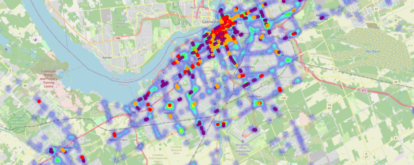
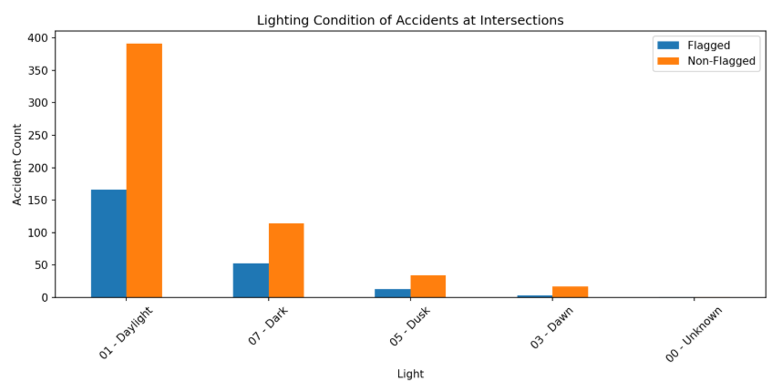

🚦 From a "Close Call" to City-Scale Analysis: Unpacking Traffic Safety Through Data
A personal close call at a tricky traffic light in Brampton sparked a data science journey for me. While driving south on Airport Road in Brampton, I had a terrifying moment. Two traffic lights: one at Hull Street and one at Derry Road were only 110 meters apart, and showed conflicting signals: red at Hull, green at Derry.
I saw the green. I didn’t see the red. And I nearly drove through the intersection at Hull.
Once I got home, I couldn’t stop thinking about it:
👉 Is this intersection actually safe?
👉 Is there a recommended spacing for traffic lights like this?
🔍 Research + City Follow-up
I dug into the Ontario Access Guidelines, which recommend 402 meters (0.25 miles) between traffic signals, nearly 4x the distance I observed.
Then I found a peer-reviewed paper studying how driver response time slows down when facing closely spaced signals with incongruent colors.
🔗 Research article: https://www.sciencedirect.com/science/article/pii/S2666691X22000112
I wrote to the Region of Peel, shared the data and guidelines, and followed up until I received a response:
✅ They acknowledged the safety issue and committed to installing optically programmable signal heads to reduce confusion.
This experience got me thinking more about the city overall: Are there other intersections like this? And can data help us find them?
🛠️ The Data Project: Scaling Curiosity
I decided to "vibe code" a methodology to identify these intersections at scale. Using Ottawa as my primary test case due to its robust open data, the process involved:
Gathering Data: Fetching thousands of traffic signal coordinates via OpenStreetMap.
Clustering Signals: Applying the DBSCAN algorithm to group individual signals into distinct intersection clusters.
Spatial Flagging: Identifying signal pairs spaced between 50m–200m apart to find potential "danger zones."
Integrating Accident Data: Merging thousands of collision records with my spatial flags, a task that required data cleaning and coordinate transformation.
📊 Testing the Hypothesis: The Statistical Deep Dive
After running the analysis for Ottawa, the results were eye-opening. I identified over 500 intersections that did not meet the recommended 400m spacing guidelines. To move into the science, I performed three core statistical tests to see if these flagged intersections were actually more dangerous than standard ones.
1. Mann-Whitney U Test (Accident Frequency)
Why: I needed to compare the number of accidents at "flagged" intersections versus "non-flagged" ones. Since accident counts aren't normally distributed (most intersections have zero accidents), a standard t-test wouldn't work.
Result: p > 0.05. There was no statistically significant difference in accident frequency based on spacing alone.
2. Correlation Analysis (Distance Groups)
Why: I wanted to see if the "danger" increased as the distance decreased (e.g., were 50m gaps more dangerous than 150m gaps?).
Result: No clear trend. Accident density remained relatively flat across all flagged distance brackets.
3. Chi-Square Test of Independence (Lighting Conditions)
Why: I hypothesized that closely spaced signals might be even more confusing at night, as this situation happened at night for me. I used a Chi-Square test to see if the distribution of night-time accidents was higher at flagged sites compared to the city average.
Result: ❌ Not supported. Both groups showed nearly identical distributions, with the vast majority of accidents occurring in broad daylight (Figure 2)

Figure 1: Shows accident density (heatmap) with flagged intersections by spacing group.

✅ Both flagged and non-flagged intersections have similar distributions, most accidents happen in daylight, not at night.
💡 What I Learned
As someone completely new to this field, the learning curve was steep. AI helped me bridge the gap for the data analysis; however, while my initial hypothesis (that short spacing equals more accidents ) wasn't supported by the Ottawa data, here are my takeaways:
Data Scaling Friction: I learned that data is rarely "plug and play." Transitioning the model from Ottawa to Toronto required a total transformation due to different data schemas. As a Data Manager, I expected this, but experiencing the KeyError bottlenecks firsthand reinforced the importance of robust data pipelines.
Technical Empathy: Navigating terminals, conda environments, and virtual setups gave me a profound respect for the "invisible" hurdles technical teams face daily.
Collaborative Optimization: When the code hit a performance wall, I worked with my sister, to optimize the backend and build a custom GUI.
🏁 Final Reflections
I’ve gained a new set of tools to explore new problems. I’ve learned that a "negative" result in data is still a successful result, it means the system is safer than I originally feared.
Please see the methodology and code on GitHub for any personal exploration for other cities.
Check out the Repo: https://github.com/shailikadakia/traffic-light/blob/main/README.md